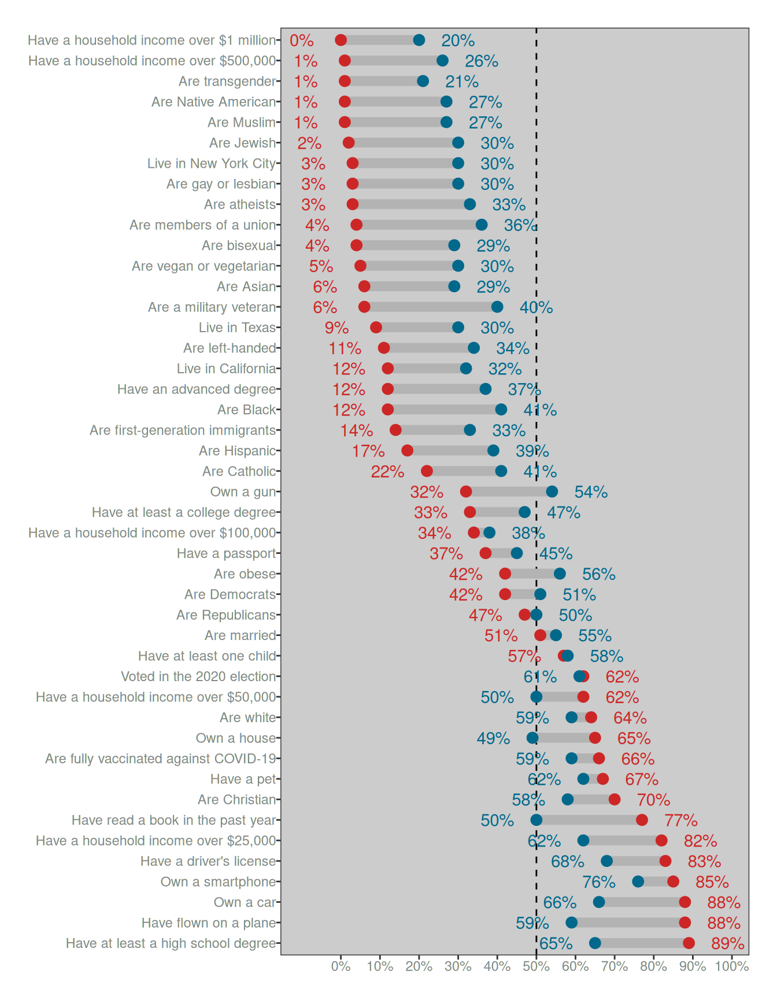
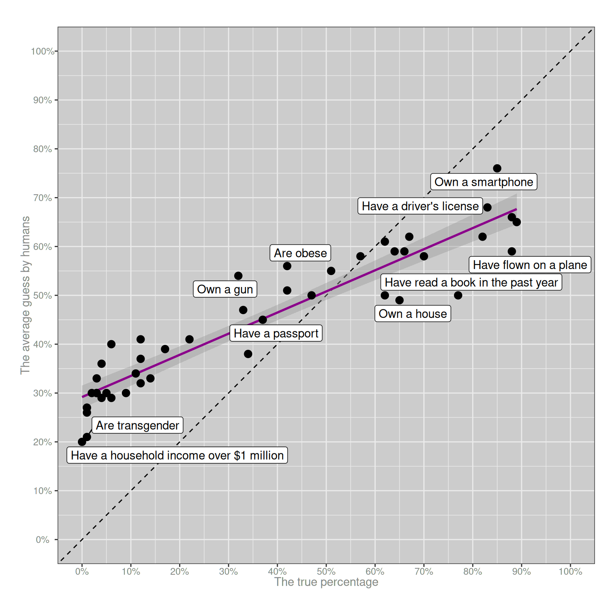
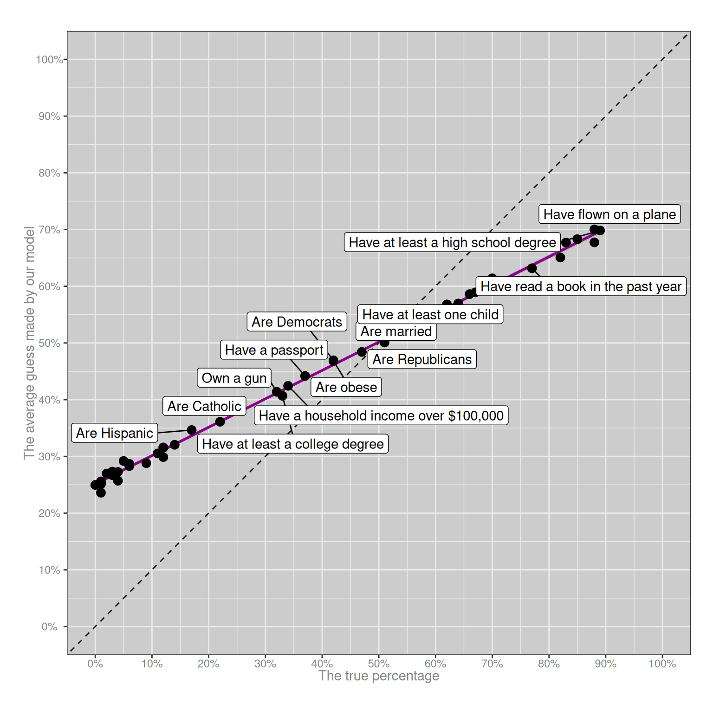
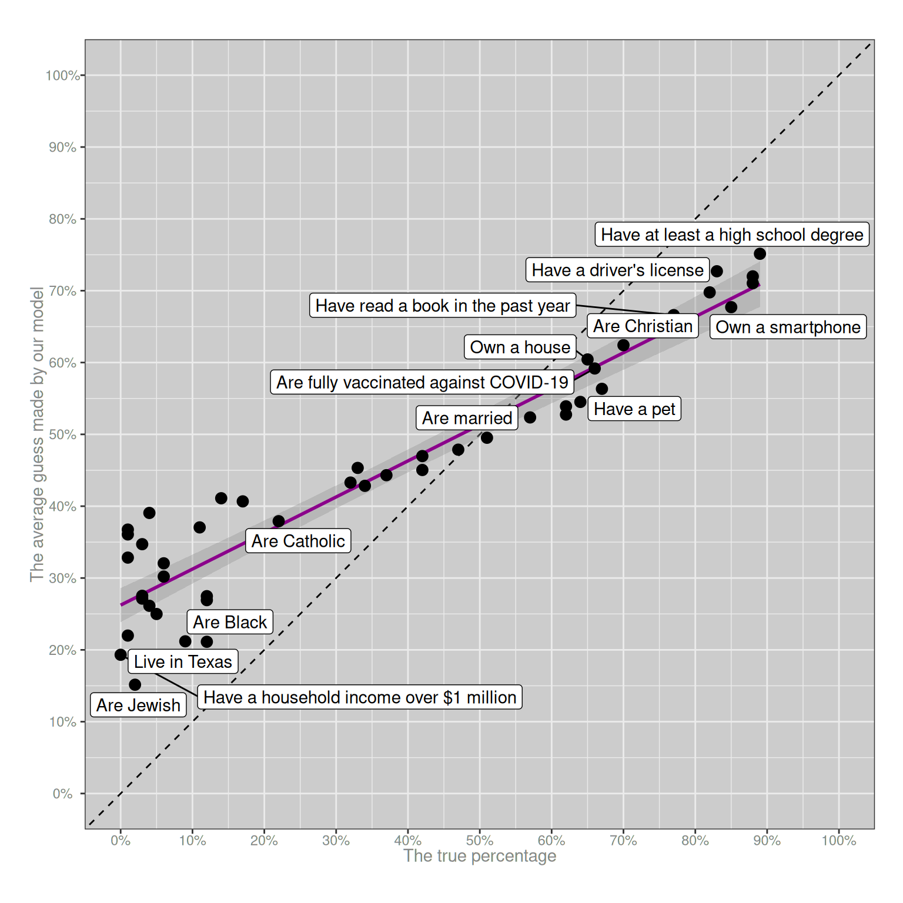
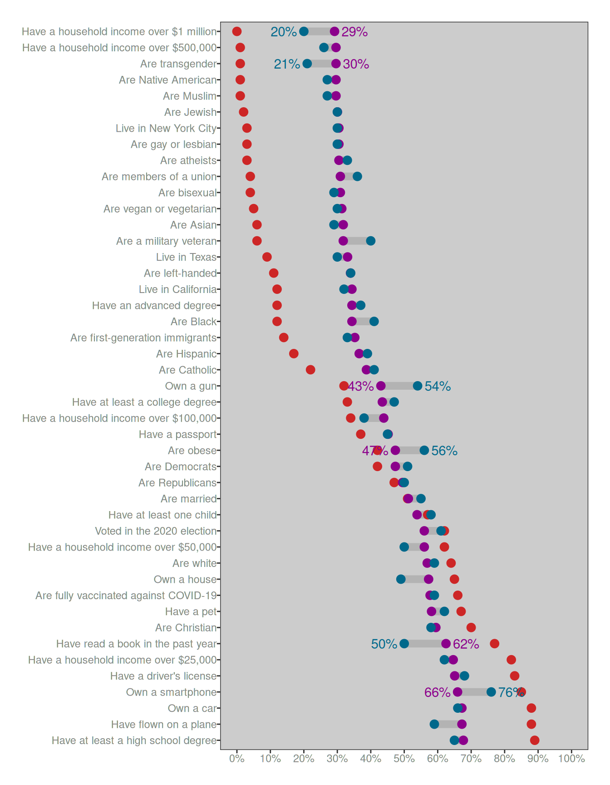

![]()
library(readr)
library(dplyr)
library(scales)
library(tibble)
library(forcats)
library(ggplot2)
library(ggrepel)There is a statistic that is currently going viral on bluesky. It is not the first time this statistic has gone viral. It has happened several times before, and every time it happens I get really angry because the statistic is false. The claim is this: “Americans are so unhinged about trans people that they actually think 1 in 5 people are trans”, and it’s always delivered with a strong undercurrent of “haha aren’t they stupid?” It’s posts like this that I’m talking about:
Haha those stupid Americans aren’t they so stupid? They think 1 in 5 people is trans!!!! It’s only 1%1 you idiots. Hahahaha. You r dumb. Et cetera. Et cetera. It’s so utterly absurd to think that 21% of the population is trans, so of course posts like the PollingUSA one go viral. Because, hey, it’s funny to laugh at how stupid other people are.
Sigh.
Now let’s be clear here. I am an Australian, and as an Australian one of my national passtimes is making fun of Americans. It is part of our national identity: we laugh at America endlessly. America is an absurd country, and I’ve no compunction whatsoever about making fun of it. However, in this case it is simply not warranted. The average American does not believe this, and it’s frankly absurd to think that they do. I don’t care one bit what YouGov or PollingUSA has to say on the topic, dear reader, and if you will permit me my full range of expression….
FOR FUCKS SAKE NOBODY THINKS THAT 21% OF PEOPLE ARE TRANSGENDER.
And yet there it is. The number is there, in the tweet, and it comes with the imprimatur of YouGov, a professional polling company who wouldn’t just make shit up (and, no, they don’t). So there must be data behind it, right? Proper honest-to-god scientific data, right? And… well… yes, actually, there is. There is real data behind this number, and that data is (as far as I can tell) entirely legitimate. Nevertheless. The claim is wrong. Obviously, demonstrably wrong. You should not believe it.
My goal in this post is to explain why, in the hope that next time you see a bullshit claim like this one, you will be able to call it bullshit and explain why it is, in fact, bullshit.
So… let’s rewind, shall we?
Where does the number come from?
The origin of the myth comes from a survey performed by YouGov in 2022, and I’ll start by reassuring you that the sampling methods – i.e., how they recruited participants – looks pretty decent to me, and the sample size is also fine. At the bottom of the article you’ll see the following description of their methodology:
This article includes findings from two U.S. News surveys conducted by YouGov on two nationally representative samples of 1,000 U.S. adult citizens interviewed online from January 14-20, 2022. The first survey included questions on groups involving race, education, income, family, gender, and sexuality, while the second survey included questions on religion, politics, and other miscellaneous groups. The samples were weighted according to gender, age, race, and education based on the 2018 American Community Survey, conducted by the U.S. Census Bureau, as well as 2016 and 2020 Presidential votes (or non-votes). Respondents were selected from YouGov’s opt-in panel to be representative of all U.S. citizens. Real proportions were taken from a variety of sources, including the U.S. Census Bureau, the Bureau of Labor Statistics, YouGov’s internal poll results, and the results of other well-established polling firms. Most estimates were collected within the past three years; the oldest is from 2009. Because the real estimates presented cover a range of time periods, they may differ from actual population sizes at the time our survey was conducted.
Blah blah blah. Whatever.
I mean, this is all perfectly sensible and none of it strikes me as a problem. If I’m honest, having done a lot of psychological studies looking at how people answer questions like this one, the YouGov survey has much better sampling methodology than you’ll see in a typical academic paper on this subject. So we can dispense with one possible worry at the outset: the sample size is adequate and the sampling methodology is good. Let’s move on.
So, what did the survey involve? Well, actually, that PollingUSA tweet that made me so angry is basically correct. They recruited a whooooole bunch of people and asked a series of questions like these..
- If you had to guess, what proportion of American adults are transgender?
- If you had to guess, what proportion of American adults have a passport?
- If you had to guess, what proportion of American adults own a car?
Et cetera, et cetera. You get the idea.
Now, one of the fun things about having spent 20 years of my life as a mathematical psychologist2 is that just from looking at the questions I can tell you something about what the responses will look like. It is entirely predictable that people will massively overestimate the answer for the trans question, massively underestimate the answer for the car question, and will probably do okay(-ish) on the passport question.
Why do I know this with utter certainty? Because it’s a trick. Stage magic, if you will, except using human psychology to do it. I have seen this parlour trick before. I know it well. In my academic days it is a trick I pulled off countless times in undergrad lectures, along with a variety of others. As the post unfolds I’ll show you how the trick works and why it works, but let’s start by taking a look at the data, which YouGov have kindly provided in their article and I have translated into a csv file.
survey <- read_csv("yougov_survey.csv", show_col_types = FALSE)
survey# A tibble: 45 × 4
category true est_mean est_median
<chr> <dbl> <dbl> <dbl>
1 Have a household income over $1 million 0 0.2 0.1
2 Are transgender 0.01 0.21 0.12
3 Have a household income over $500,000 0.01 0.26 0.19
4 Are Muslim 0.01 0.27 0.2
5 Are Native American 0.01 0.27 0.2
6 Are Jewish 0.02 0.3 0.25
7 Live in New York City 0.03 0.3 0.22
8 Are gay or lesbian 0.03 0.3 0.24
9 Are atheists 0.03 0.33 0.28
10 Are bisexual 0.04 0.29 0.24
# ℹ 35 more rowsThis isn’t the raw data, obviously, it’s just a summary:
- the
categorycolumn indicates which question was being asked - the
truecolumn gives you the actual proportion (i.e., the correct answer) - the
est_meancolumn is the average response people gave when asked the question - the
est_mediancolumn is the median response people gave when asked the question
Fair enough. Here’s a recreation of the first plot that appears in the YouGov article. Look, I’ll even show you the code used to create it…
percent <- label_percent(accuracy = 1)
survey |>
mutate(
category = fct_reorder(category, -true),
lbl_true = if_else(true > est_mean, true + .1, true - .1),
lbl_est = if_else(true > est_mean, est_mean - .1, est_mean + .1)
) |>
ggplot(aes(y = category)) +
geom_vline(xintercept = 0.5, linetype = "dashed") +
geom_segment(aes(x = true, xend = est_mean), linewidth = 3, color = "grey70") +
geom_point(aes(x = true), color = "firebrick3", size = 3) +
geom_point(aes(x = est_mean), color = "deepskyblue4", size = 3) +
geom_text(aes(x = lbl_true, label = percent(true)), color = "firebrick3") +
geom_text(aes(x = lbl_est, label = percent(est_mean)), color = "deepskyblue4") +
scale_x_continuous(breaks = (0:10)/10, labels = label_percent()) +
labs(x = NULL, y = NULL) +
theme(axis.text.y = element_text(hjust = 1), panel.grid = element_blank())
It’s not quite as pretty as the version on the YouGov page, but you get the idea. The dots and numbers in red show the correct answer for each category, and those in blue show the average response given by the participants in the survey. The one thing I’ve added to the plot is the dashed line at 50%.
Are people really that stupid?
Okay, so now we understand where the data come from and as a side benefit we even have a pretty little picture that we’ve drawn all on our very own. Yay us. But what are the data actually saying.
Well, when you look at the plot there is a clear pattern, and that pattern is so obvious that it feels condescending and silly to actually say it. Nevertheless, I will do my duty and say the words out loud: the human responses are squashed. The blue dots are always closer to the dashed line at the magic “50%” number than the red dots. The blue does aren’t randomly located – they’re approximately in the right order – but they’re noisy and they are “squashed”. Compared to the red dots, the human responses in blu get draaaaaged as if by some kind of statistical magnet towards the middle. But the ordering stays the same. (More or less)
This is the absolutely critical thing to pay attention to. People do know which categories are more common than other categories, we’re just really shit at coming up with the numbers. To highlight this, notice that the blue dot for the “vegetarian” question sits at 30%, and the blue dot for the “transgender” question sits at 21%. Both of these numbers are grossly incorrect – they should be 5% and 1% respectively – but the ordering is correct. People are actually very good at noticing that “well yeah duh of course there are more vegetarians than transsexuals3 omg how stupid do you think I am????” Humans4 aren’t stupid. We do in fact know which things are common and which things are rare.5
This is so blindingly fucking obvious that it hurts me to have to write it.
I mean, at the risk of boring you all to death, I will draw another goddamn plot using the same data. Each dot will represent one of the categories. On the x-axis I’ll show the true percentage (the correct answer), and on the y-axis I’ll show the average guess made by the lovely folks who participated in that YouGov survey. Hell, I’ll even label some of the dots for you. Here it is:
ggplot(survey, aes(x = true, y = est_mean)) +
geom_abline(slope = 1, intercept = 0, linetype = "dashed") +
geom_smooth(method = "lm", formula = y ~ x, color = "magenta4") +
geom_point(size = 3) +
geom_label_repel(aes(label = category), max.overlaps = 5) +
scale_x_continuous(limits = c(0,1), breaks = (0:10)/10, labels = label_percent()) +
scale_y_continuous(limits = c(0,1), breaks = (0:10)/10, labels = label_percent()) +
labs(x = "The true percentage", y = "The average guess by humans") +
coord_equal()
Purple line. She go up. People truly honest-to-dog know which things are more common than other things. They are not stupid.
Fucking duh.
Okay, people not stupid but why line so flat?
Now that we’ve established that (a) alas, despite our desperate wish to make fun of them, Americans are not stupid and they do know which things are more common than the other things, and (b) we have a nice pretty purple line proving this, but it’s flatter than it should be. So we are naturally led to ask ourselves (c) why she so flat, and also, wtaf? why is dot for transes at 21? when should be at 1??
Despite my childish phrasing, these are excellent scientific questions, and happily for us they’re scientific questions that have been studied quite thoroughly since the 1970s or thereabouts. The “classic” paper that every undergrad psychology class starts with is a short article on heuristics and biases by Amos Tversky and Daniel Kahneman from 1974. It’s a fabulous paper,6 and one that shaped a lot of the scientific research in the field that later became known as “behavioural economics”. The key insight in the paper is alarmingly – and deceptively – simple. When you ask people to make a choice or a judgement about something they’ve never thought about before, we don’t consult a magic oracle in our heads that gives us an answer. Instead, what we do is find something kinda similar to that question that we do know something about and answer that question instead. We rely on heuristics that help us find an approximate answer.
Again, duh. What the fuck else are we going to do? But it’s the details that matter. What specific heuristics do people use in order to answer questions like this? That part is harder. The thing that made that Tversky and Kahneman paper so enticing is that they proposed a lot of specific “tricks” that people rely on when we are confronted by these sorts of questions. Over the years psychologists have explored many different ideas in this respect, and this blog post isn’t the right place to talk about all the details. I don’t agree with all the claims that they made back in 1974, and over the years I’ve written a lot of academic papers in which I’ve agreed with some bits and disagreed with others. But whatever. The little academic nuances aren’t important for this post… we’re talking big picture stuff here, so I’m going to gloss over the details.7
So let’s go back to the YouGov survey. That purple line is often called a calibration function in psychology8. It plots the relationship between the true probability, and the average answer people give when asked to guess the true probability. It always looks like this. That “squashed” pattern that we see with our purple line is so predictable that I’ve relied on it in lectures. The calibration function will almost always trend in the right direction (because people do know something about the topic), but it will be kind of flat (because we also make mistakes). When the true probability is very small, people’s answers will (on average) always be too high; and when the true probability is very high, people’s answers on average will be too low. It happens every time.
To illustrate why it’s so predictable, let’s try a simple theory, one that is too silly to be real and easily disproved by data,9 but one that helps us refine our thinking. Let’s suppose that half of the time people – somehow, miraculously – know the exact true number, and they respond by telling us the right answer. But if they don’t know the answer, or just don’t care enough to answer the question, they guess completely at random by picking a number between 0% and 100%. What might the YouGov data look like if people were doing that?
Well, the wonderful thing about computers is that I can find out with just a few lines of code. The code below is not very efficient (deliberately), but it does the job. It cycles over all the questions in the YouGov survey, simulates a “truth or wild guess” process, and then calculates what the average response would look like:
random_error <- function(truth) {
error_rate <- .5
sample_size <- 1000
n_questions <- length(truth)
mean_response <- numeric(length = n_questions)
for (q in 1:n_questions) {
is_wrong <- runif(sample_size) < error_rate
n_wrong <- sum(is_wrong)
response <- rep(truth[q], sample_size)
response[is_wrong] <- runif(n_wrong)
mean_response[q] <- mean(response)
}
return(mean_response)
}So let’s apply this random_error() model to the data and see what that looks like:
simulated_survey <- survey |> mutate(est_sim = random_error(true))
ggplot(simulated_survey, aes(x = true, y = est_sim)) +
geom_abline(slope = 1, intercept = 0, linetype = "dashed") +
geom_smooth(method = "lm", formula = y ~ x, color = "magenta4") +
geom_point(size = 3) +
geom_label_repel(aes(label = category), max.overlaps = 9) +
scale_x_continuous(limits = c(0,1), breaks = (0:10)/10, labels = label_percent()) +
scale_y_continuous(limits = c(0,1), breaks = (0:10)/10, labels = label_percent()) +
labs(x = "The true percentage", y = "The average guess made by our model") +
coord_equal()
Okay, this already gets us part of the way there. A simple theory that says “people know the exact answer half the time, and guess completely at random the other half of the time” is… actually not that far off? It’s pretty obvious just by looking at the differences between the real plot and the simulated plot that this is not the real story, but it’s enough to answer our first question: whenever people can make mistakes, the purple line will be squished. More than that, the “squishing” effect will be strongest at the extremes. If the true answer is 1%, random errors will have a huuuuuuuge effect in pulling the average upwards. If the true answer is 50%, random errors will tend to cancel each other out.
In other words, the single most important reason why people grossly overestimate the proportion of the population that is transgender has absolutely nothing to do with bigotry, with stereotypes, or even to do with trans people. It looks like that because the correct answer is so small. That’s it. That is the single most important factor in play. On a bounded scale (i.e., the true answer must be a number between 0% and 100%) random mistakes will always drag the small numbers upwards, and the big numbers downwards. Being transgender is rare, and answering a question incorrectly is possible. Those two facts alone are enough to explain why the average answer to the YouGov question about trans people is so grossly distorted. You don’t need to make any fancier assumptions than those to explain the “wtaf why 21% trans” part of the YouGov survey.
Okay, line so flat but why dots so scattered?
One problem with the simple “random error” theory that I proposed in the last section is that while it does produce a flattend calibration curve, it doesn’t produce enough variability: all the black dots sit pretty close to the purple line. Random error isn’t sufficient to explain why the human judgments don’t all sit on a straight line. There must be something else going on. So… perhaps some questions are harder to answer than others? Let’s say some questions are easy: 75% of people know the correct answer and provide that answer in the survey. Other questions are harder, and only 25% of people know the correct answer. Everyone else guesses completely at random. What might the YouGov survey look like under those assumptions? Here’s a quick and dirty simulation:
Code for the variable difficulty model
set.seed(123)
variable_difficulty <- function(truth) {
sample_size <- 1000
n_questions <- length(truth)
difficulty <- runif(n_questions, min = .25, max = .75)
mean_response <- numeric(length = n_questions)
for (q in 1:n_questions) {
is_wrong <- runif(sample_size) < difficulty[q]
n_wrong <- sum(is_wrong)
response <- rep(truth[q], sample_size)
response[is_wrong] <- runif(n_wrong)
mean_response[q] <- mean(response)
}
return(mean_response)
}
simulated_survey <- survey |> mutate(est_sim = variable_difficulty(true))
ggplot(simulated_survey, aes(x = true, y = est_sim)) +
geom_abline(slope = 1, intercept = 0, linetype = "dashed") +
geom_smooth(method = "lm", formula = y ~ x, color = "magenta4") +
geom_point(size = 3) +
geom_label_repel(
aes(label = category),
max.overlaps = 8,
force = 3,
force_pull = .2
) +
scale_x_continuous(limits = c(0,1), breaks = (0:10)/10, labels = label_percent()) +
scale_y_continuous(limits = c(0,1), breaks = (0:10)/10, labels = label_percent()) +
labs(x = "The true percentage", y = "The average guess made by our model") +
coord_equal()
Weirdly, despite the simplicity of the model, the basic “look and feel” of this plot is about right. I mean, obviously it’s not literally predicting the results of the YouGov survey correctly, but it gets the “big picture” aspects correct. The purple line has the right slope, and the variability of the black dots around the purple line is also about right. Again, I should stress that this model is not true. I don’t have access to the raw data from the YouGov survey, but I have seen dozens of data sets just like it and I can guarantee you that if we did have access to the raw data and started digging into the answers given by individual people, you’d see wild discrepancies between what they actually say and what this model predicts.10 But for the moment let’s not worry about that and just focus on the fact that we can reproduce something very much like the YouGov survey pattern by making two very boring assumptions:
- Sometimes people make mistakes
- Some questions are harder than others
Those two factors alone are sufficient to ensure that every survey that asks human beings to guess how rare or how common different things are – or, to use the slightly more technical term, every survey that collects data from human probability judgments – will have this approximate pattern. You will always observe a flattened calibration curve, and you will always observe some scattering around the calibration curve. In this respect, the survey data will be as predictable as the tides.
Yeah but that’s not the whole story, is it?
Okay, so let’s take a moment to think about what we’ve worked out. If we were designing something like the YouGov survey and we’d taken an undergrad psychology class that covered human judgement and decision making, we would already know what to expect in advance. We expect that the calibration curve will be squished, and we expect that there will be some variability around that calibration curve. It would be bizarre if our survey were to produce anything else. But… what things about the data can’t be predicted in advance solely on the basis of a psychology 101 class? One obvious answer to this is that we don’t know which of the black dots (questions) will fall a long way from the calibration curve (purple line). To answer that question, we actually have to analyse the data!
In real life, analysing probability judgement data properly can be a delicate affair, especially if you want to truly appreciate the nuances or if you want to find out whether some of your participants are better calibrated than others. It gets especially messy when you start asking questions about what the shape of the calibration curve should look like.11 But for the purposes of this blog post I’m not going to be concerned with those sorts of details. All I’m going to do is fit a linear regression model to the data (i.e., estimate the purple line), and then pull out those questions where people’s responses deviate substantially from the calibration curve. Here they are:
mod <- lm(est_mean ~ true, survey)
survey |>
mutate(pred = predict(mod)) |>
filter(abs(pred - est_mean) > .085)# A tibble: 6 × 5
category true est_mean est_median pred
<chr> <dbl> <dbl> <dbl> <dbl>
1 Have a household income over $1 million 0 0.2 0.1 0.292
2 Are transgender 0.01 0.21 0.12 0.296
3 Own a gun 0.32 0.54 0.52 0.430
4 Are obese 0.42 0.56 0.56 0.473
5 Have read a book in the past year 0.77 0.5 0.5 0.625
6 Own a smartphone 0.85 0.76 0.8 0.659Now we are finally getting somewhere! These are the questions where people’s answers are surprising, and we might need to ask why the answers are surprising.
So let’s now redraw the YouGov plot with the red dots (true probabilities) and the blue dots (average responses). But this time we’ll also add some purple dots… the purple dots show the answers that we would expect to observe if the data sat perfectly on the calibration curve. Here’s what that looks like:
Plotting code
predictions <- survey |>
mutate(
pred = predict(mod),
category = fct_reorder(category, -pred),
lbl_pred = if_else(pred > est_mean, pred + .06, pred - .06),
lbl_est = if_else(pred > est_mean, est_mean - .06, est_mean + .06)
)
surprises <- predictions |> filter(abs(pred - est_mean) > .085)
ggplot(predictions, aes(y = category)) +
geom_segment(
mapping = aes(x = pred, xend = est_mean),
linewidth = 3,
color = "grey70"
) +
geom_point(aes(x = true), color = "firebrick3", size = 3) +
geom_point(aes(x = pred), color = "magenta4", size = 3) +
geom_point(aes(x = est_mean), color = "deepskyblue4", size = 3) +
geom_text(
data = surprises,
mapping = aes(x = lbl_pred, label = percent(pred)),
color = "magenta4"
) +
geom_text(
data = surprises,
mapping = aes(x = lbl_est, label = percent(est_mean)),
color = "deepskyblue4"
) +
scale_x_continuous(
limits = c(0, 1),
breaks = (0:10)/10,
labels = label_percent()
) +
labs(x = NULL, y = NULL) +
theme(
axis.text.y = element_text(hjust = 1),
panel.grid = element_blank()
)
Ahhhhh… now things are starting to make a lot more sense. For three of the “possibly surprising” questions, people’s responses are only “surprising” in the sense that they’re more accurate than the calibration curve predicts. Those questions are:
- what proportion of people are transgender?
- what proportion of households have income over $1 million?
- what proportion of people own a smartphone?
For these three “surprises”, the only thing that might be surprising is that people do better at answering the questions than we might otherwise expect! These aren’t “biases” in the usual sense, all of these are cases where people are actually better informed than usual. There’s no need to puzzle over these, at least not in the sense of asking why people get it wrong because they’re not getting it surprisingly wrong, they’re getting it surprisingly right!
To the extent that we should be surprised by the YouGov data, the ones that should be truly puzzling to us are these three, because these are the cases in which the deviations from the calibration curve push people even farther from the truth than we would expect on the basis of basic human psychology:
- people drastically overestimate gun ownership
- people drastically overestimate obesity rates
- people drastically underestimate how often we read books
These are the only three questions for which the YouGov data provides concrete evidence that people might be systematically ill-informed. Everything else we can account for very easily, using nothing fancier than a minimal knowledge of human psychology and basic statistics. But even there, one of those three we can ignore immediately – specifically, the obesity rates question. The problem with this question is that “obesity” is an inherently subjective judgement. What you and I think of as “obese” might be quite different from the formal medical definition. In other words, for that question the answer might be as boring as “medical definitions are different from everyday meanings of words”. Again, no special pleading is required here.
That leaves us with a mere two cases that actually require an explanation: owning guns and reading books. These are both objective categories, and people are strangely misinformed about both. We overestimate how many people own guns, and we underestimate how many people read books. That’s it. Those are the only two things in the YouGov data that you ought to find peculiar.
As to why those two questions might be special… well, personally I think it’s pretty obvious what makes those questions different from the others, but I’ll leave that part as an exercise for the reader.
Epilogue
One of the most confusing things about doing psychological research is that it’s something that feels easy but is actually very hard. When you do a survey like the YouGov one and don’t think too hard about what it means, you can very quickly find yourself in trouble. Over and over I have seen smart researchers collect data like this and come to the conclusion that “people are stupid”. And look, sometimes we are stupid. That’s part of human nature too. But oftentimes, the answer isn’t so much that “people are stupid” as it is “the question is weird”.
The idea of quantifying uncertainty using numerical probability is comparatively recent. It’s something we’ve only been doing as a species for a few hundred years. In contrast, “remembering that this thing is common and this other thing is rare” is something we (and the species from which we evolved) have been doing for millions of years. So it should not come as a surprise to learn that people are actually pretty good at noticing which thing is more common than the other thing; the only thing we’re not good at is translating that knowledge into a number.
In fact, there’s a whole separate line of work known as the “decisions from experience” literature that tries to sidestep that last part. Instead of asking people to estimate a number, what those studies do is allow people to make ordinary decisions (e.g., choose the thing that is more common) and then use those decisions to work out what knowledge people implicitly possess. When you design the studies that way, the data you get look veeerrrrrry different. Sometimes the direction of the apparent miscalibration reverses entirely: in a lot of those studies it looks like people underestimate the frequency of rare categories, not overestimate it. Of course, that might not be an error either: the logic of those tasks is very different to the logic of a probability judgment task, and to unpack the patterns we see in those experiments would be a whole separate blog post.
Psychology, it turns out, is hard.
Footnotes
I mean… look, estimates of this vary quite substantially, and it depends a lot on the on methodology, and dear lord it really hard to quantify that sort of thing but as a ballpark figure, yes, 1% is pretty reasonable. Let’s just accept it as true↩︎
Before my rather bizarre pivot to become a pharmacometrician, that is↩︎
On the off chance that this post is read by people outside my circles and someone wants to tell me off for using the word ”trannnnnsssexual”… I’m a trans woman, I’ve been publicly out as a trans woman for well over a decade now, and I use the term ”transsexuals” with love. It is a self-deprecating in-joke that we trannies use sometimes when talking about ourselves. Calm the fuck down.↩︎
Yes, even Americans.↩︎
As always there is some nuance here, and this blog post is not the place to go into it. But I will point folks towards this lovely paper by Guay et al (2024) that does start to unpack the nuances.↩︎
Amos Tversky in particular is one of my scientific idols. The largest part of my PhD thesis involved me picking a fight with one equation he wrote in the Appendix to a paper in 1977 (the year I was born): I think his core insight was correct but he framed it the wrong way, but he did so in such a precise way that it was possible for me to carefully quibble with him many years after his death. Amazing scientist. One of the finest minds psychology has been blessed with.↩︎
Seriously, if you even think of coming at me to talk about Prelec weight functions I will cut you.↩︎
Though it goes by a few different names↩︎
I mean, I personally have dozens of data sets buried in my academic archive that would let me tear this one to shreds, but I won’t need to break them out because the YouGov data is already rich enough to disprove this theory.↩︎
For one thing, the model doesn’t account for the fact that people don’t use numbers “literally” in these sorts of surveys. It is vanishingly rare for someone to respond with something like “22.3%”. People use numbers like “50%” and “20%”, and when they do that the numbers aren’t literally intended to be interpreted as proportions: when someone says “50%” what they actually mean is often “I have no idea whatsoever”, and when they say “20%” what they mean is “I don’t know but I think it’s small”. Once you start digging into these sorts of data at the individual response level, these patterns really do start to matter. I’m not going to talk about that in this post though.↩︎
Throughout this post I’m assuming that the calibration function is linear, but there are very good reasons to expect a nonlinear shape to emerge in some kinds of data – in a lot of cases what you actually see in the wild is that when the probability gets extremely close to 0% or 100% the curve bends back and people are perfectly calibrated at the endpoints. This happens when you start including questions like “what proportion of the human population is taller than 6m?” The correct answer to that question is 0% and everybody gets that one correct. The only way people make errors is if they accidentally press the wrong button or if they deliberately lie. In general, calibration is perfect whenever everyone knows “impossible thing is impossible” or “certain thing is certain”. That phenomenon alone creates nonlinearities. But the YouGov survey doesn’t cover those kinds of cases, and for our purposes it will be sufficient to ignore the nuances and just pretend that the calibration function is linear.↩︎
Reuse
Citation
BibTeX citation:
@online{navarro2025,
author = {Navarro, Danielle},
title = {Some Notes on Probability Judgement},
date = {2025-09-21},
url = {https://blog.djnavarro.net/posts/2025-09-21_probability-judgement/},
langid = {en}
}
For attribution, please cite this work as: